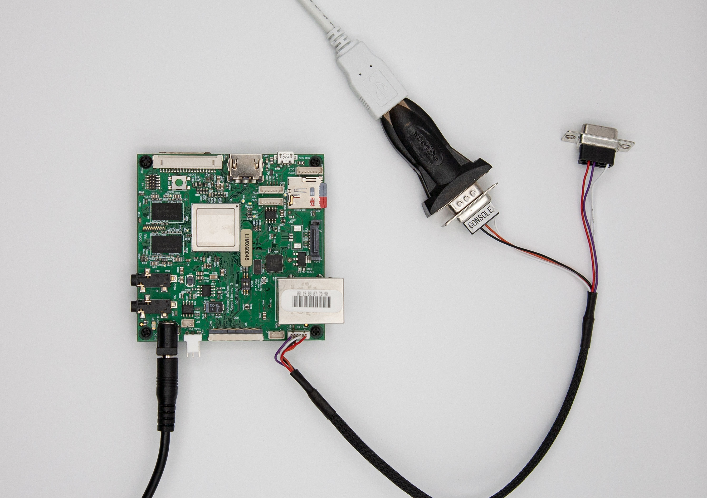

BD-SL-i.MX6 Platform¶
The following sections will provide all information required to successfully boot a TRENTOS system image on the BD-SL-i.MX6.
Subpages¶
Board Setup¶
To connect the board to the development PC, the following cabling/tooling is required:
AC/DC Power supply (5V, min 1.5A, DC barrel connector 2.1mm x 5.5mm).
A USB-to-RS232 cable for console and logs that needs to be connected to the serial connector labeled “CONSOLE” (note that it has an RS232 connector and can deal with RS232 voltage levels and not the UART/USB adapter that supports TTL voltage levels).
An SD card that the U-Boot files need to be copied to as described in the section below.
The following components are optional but will make using the board much easier:
USB Hub
SD Card Switcher (see Hardware Tools section) for quick accessing the SD card both from the board and the PC
USB Network adapter

Once the USB-to-RS232 cable has been connected, start a serial monitor
that shows the received traffic. One way of doing this is to use
the picocom utility with the following command:
sudo picocom -b 115200 /dev/<ttyUSBX>
Hereby, <ttyUSBX> acts as a placeholder for the specific device
representing the USB-to-UART adapter, e.g. ttyUSB0. Note that
using sudo may not be required, this depends on your Linux group
membership giving your account access to /dev/<ttyUSBX>.
Boot Mode¶
As with all platforms from BoundaryDevices, the BD-SL-i.MX6 can be configured to boot from either USB (OTG port, see https://boundarydevices.com/unbricking-nitrogen6x-sabre-lite-i-mx6-board/) or the internal SPI flash by setting the DIP switch (SW1) accordingly.
USB booting is typically only used when there is a failure in the SPI flash resident bootloader. One may use USB boot to temporarily boot a bootloader like U-Boot and reflash the SPI memory.
The exact procedure of how a bootloader such as U-Boot can be flashed to the internal memory will be described in the sections below.
Prerequisites¶
The BD-SL-i.MX6 with U-Boot flashed to its internal memory requires additional binary files to be placed on the SD card for being able to boot a TRENTOS system successfully.
The required files and their meaning are explained in the following overview:
Type |
Blob |
Usage |
|---|---|---|
U-Boot |
u-boot.imx |
U-Boot binary which needs to be flashed to the internal NOR flash memory of the board. |
6x_bootscript.txt |
U-Boot bootscript that is not placed on the SD card but is required to compile the 6x_bootscript from. |
|
6x_bootscript |
Compiled U-Boot script from the 6x_bootscript.txt that needs to be placed on the SD card so U-Boot can find it once it boots up and execute the commands compiled into it. |
|
TRENTOS |
os_image.elf |
The TRENTOS system image, containing the TRENTOS OS (seL4 kernel & TRENTOS userland) and applications that along with the 6x_bootscript needs to be placed on the SD card. |
All of the U-Boot related files listed above can be found already
prepared in the resources/sabre_sd_card folder of the SDK.
Please refer to Using an SD Card with a TRENTOS System for a detailed description of how to partition the SD card properly.
In addition to that, the following sections explain in more detail, how the required files can be created from scratch and where the sources to build the binaries can be obtained from.
U-Boot¶
Info: You may find already built u-boot.imx image in the SDK’s
resources/sabre_sd_card, so you may skip this paragraph.
Preparations for Building U-Boot from Sources¶
If you want to build the required U-Boot binary directly from the sources, first ensure that all the necessary packages are installed:
sudo apt install gcc-arm-linux-gnueabihf u-boot-tools flex bison
U-Boot is available in two versions:
The mainline repository, that can be found at https://github.com/u-boot/u-boot
The U-Boot repository from BoundaryDevices, see https://github.com/boundarydevices/u-boot-imx6
The following sections will only describe the build process for the sources gathered from BoundaryDevices.
Building U-Boot from BoundaryDevices Fork¶
Clone the U-Boot repository from BoundaryDevices to gather the required sources.
git clone https://github.com/boundarydevices/u-boot-imx6.git
cd u-boot-imx6
At the time of writing, the current stable branch is boundary-v2018.07
(and head is 8a288f8beb9a00dea078d95830dda066a050a176). However, building
a working U-Boot requires the commit
995eab8b5b580b67394312b1621c60a71042cd18 to be reverted. The default
U-Boot will not succeed to boot a seL4 image due to cache configuration issues
in the ELFLoader. Therefore, caches have to be disabled in U-Boot before loading
seL4, which is done by reverting the mentioned commit before building U-Boot.
git checkout boundary-v2018.07
git revert 995eab8b5b580b67394312b1621c60a71042cd18
Build the U-Boot binary with the default configuration for the BD-SL-i.MX6.
make nitrogen6q_defconfig
make ARCH=arm CROSS_COMPILE=arm-linux-gnueabihf- -j2
After the build ran successfully, the folder should now contain the
U-Boot binary named u-boot.imx.
Prepare a U-Boot Boot Script to Start a TRENTOS Image¶
U-Boot supports storing commands or command sequences in a plain text file, which then later can be converted into a script image that U-Boot can execute. This feature can be used to create a bootscript that will instruct U-Boot to search for the system image that is supposed to be run and to which address in the internal memory the image should be loaded to.
Info: Both boot script 6x_bootscript.txt and its compiled
variant 6x_bootscript can be found in the SDK’s
resources/sabre_sd_card. However, if you wish to create your own please
follow the instructions below.
Create an empty text file, name it 6x_bootscript.txt and write the
following instructions to it. As mentioned, this will instruct U-Boot to
search the MMC devices for a system image called os_image.elf and
load it to the address 0x13800000.
The DDR RAM of the i.MX6Q is mapped to the physical address space at
0x10000000. Therefore the TRENTOS os_image.elf will be
placed with an offset of 0x03800000 (effectively 58 MiB), leaving
the ElfLoader enough space to unpack without running the risk of
overwriting itself.
# expecting "board=sabrelite, cpu=6Q"
echo "board=${board}, cpu=${cpu}"
if itest.s "xsabrelitex6Q" != "x${board}x${cpu}" ; then
echo "unsupported board";
exit;
fi
if load mmc 1:1 0x13800000 /os_image.elf ; then
bootelf 0x13800000
fi
echo "Error loading system"
Compile the bootscript using the mkimage tool from the u-boot-tools-package.
mkimage -A arm -O linux -T script -C none -n "boot script" \
-a 0 -e 0 -d \
6x_bootscript.txt \
6x_bootscript
Once the tool ran, the folder should now contain the compiled 6x_bootscript.
Boot from the Internal NOR Flash¶
Overview¶
As previously mentioned, the BD-SL-i.MX6 can boot either from USB (Serial Boot) or its internal 2 MiB SPI NOR flash (Serial EEPROM).
This section describes how U-Boot can be flashed to the internal memory of the board.
Please note that the following steps are all based on the assumption that the board already contains a working U-Boot version in its internal memory and that this preexisting version is supposed to be overwritten with a different version. In case the board is not booting at all, first follow the steps described on the vendor’s website (https://boundarydevices.com/unbricking-nitrogen6x-sabre-lite-i-mx6-board/) to unbrick the board.
Install U-Boot in the Internal Flash¶
Copy the upgrade.scr and u-boot.imx file located in the SDKs
resources/sabre_sd_card folder to the SD card.
Power on the board while in a terminal window running picocom as described
above. Interrupt the boot process by pressing <Enter> when the console outputs
“Hit any key to stop autoboot”.
U-Boot 2018.07-36539-ge26f5ffed7 (Nov 24 2020 - 20:32:25 +0100)
CPU: Freescale i.MX6Q rev1.2 at 792 MHz
Reset cause: POR
Board: sabrelite
I2C: ready
DRAM: 1 GiB
MMC: FSL_SDHC: 0, FSL_SDHC: 1
Loading Environment from SPI Flash...
SF: Detected gd25q16c with page size 256 Bytes, erase size 4 KiB, total 2 MiB
OK
Display: hdmi:1280x720M@60 (1280x720)
In: serial
Out: serial
Err: serial
Net: Micrel ksz9021 at 7
FEC [PRIME], usb_ether
Hit any key to stop autoboot: 0
Run the following command to upgrade U-Boot in the internal SPI flash
(note u at the end):
=> run upgradeu
This will run the upgrade.scr script, search for the
u-boot.imx file and flash it. Once the process has successfully
completed, the internal flash of the board should now contain the
version of U-Boot. On success you should see the following output:
=> run upgradeu
MMC: no card present
mmc_init: -123, time 2
switch to partitions #0, OK
mmc1 is current device
Scanning mmc 1:1...
Found U-Boot script /upgrade.scr
4174 bytes read in 14 ms (291 KiB/s)
## Executing script at 10008000
SF: Detected gd25q16c with page size 256 Bytes, erase size 4 KiB, total 2 MiB
probed SPI ROM
check U-Boot
568320 bytes read in 39 ms (13.9 MiB/s)
read 8ac00 bytes from SD card
device 0 offset 0x400, size 0x8ac00
SF: 568320 bytes @ 0x400 Read: OK
byte at 0x12000400 (0xd1) != byte at 0x12400400 (0xb8)
Total of 0 byte(s) were the same
Need U-Boot upgrade
Program in 5 seconds
5
4
3
2
1
erasing
SF: 786432 bytes @ 0x0 Erased: OK
programming
device 0 offset 0x800, size 0x8a800
SF: 567296 bytes @ 0x800 Written: OK
device 0 offset 0x400, size 0x400
SF: 1024 bytes @ 0x400 Written: OK
verifying
device 0 offset 0x400, size 0x8ac00
SF: 568320 bytes @ 0x400 Read: OK
Total of 568320 byte(s) were the same
---- U-Boot upgraded. reset
---- U-Boot upgraded. reset
You may now do a power-on reset, to start U-Boot from the internal memory.
USB Recovery¶
If something went wrong, you can still recover the board via USB recovery mode using the OTG port.
The steps below are based on https://boundarydevices.com/recovering-i-mx-platforms-using-uuu/.
Force a boot to the USB recovery mode (OTG port) by setting the DIP switch (SW1) to the ON position (https://boundarydevices.com/unbricking-nitrogen6x-sabre-lite-i-mx6-board/).
Connect the micro-B USB cable, power on the board, and check if the device gets detected:
lsusb | grep Free
Bus 001 Device 097: ID 15a2:0071 Freescale Semiconductor, Inc.
Download the latest uuu binary from
https://github.com/NXPmicro/mfgtools/releases and run uuu with the desired
U-Boot image:
sudo ./uuu u-boot.imx
uuu (Universal Update Utility) for nxp imx chips -- libuuu_1.4.43-0-ga9c099a
Success 1 Failure 0
1:21 2/ 2 [Done ] SDP: done
On success you should see on the U-Boot console:
U-Boot 2018.07-36539-ge26f5ffed7 (Nov 24 2020 - 20:32:25 +0100)
CPU: Freescale i.MX6Q rev1.2 at 792 MHz
Reset cause: POR
Board: sabrelite
I2C: ready
DRAM: 1 GiB
MMC: FSL_SDHC: 0, FSL_SDHC: 1
Loading Environment from SPI Flash...
SF: Detected gd25q16c with page size 256 Bytes, erase size 4 KiB, total 2 MiB
OK
Display: hdmi:1280x720M@60 (1280x720)
In: serial
Out: serial
Err: serial
Net: Micrel ksz9021 at 7
FEC [PRIME], usb_ether
*** Warning - Started from usb, using default environment
Hit any key to stop autoboot: 1
Connect the SD card with the desired U-Boot image and the update script, and run
upgrade.scr as in the previous paragraph.
Boot Up¶
Copy the 6x_bootscript that was created as described above and
an os_image.elf system image to the SD card and insert it into the
microSD slot of the board.
Note: In case that an SD Card Switcher is utilized, be aware that the microSD card slot of the BD-SL-i.MX6 does not hold the Switcher very well. If U-Boot is unable to find the bootscript, double-check the SD card mounting in the slot. Consider using a small stripe of tape to fix the SD Card Switcher to the microSD slot.
MMC: no card present
mmc_init: -123, time 1
switch to partitions #0, OK
mmc1(part 0) is current device
** No partition table - mmc 1 **
The board can now be powered on and a result similar to the one below shall be printed on the terminal:
U-Boot 2018.07-36539-ge26f5ffed7 (Nov 24 2020 - 20:32:25 +0100)
CPU: Freescale i.MX6Q rev1.2 at 792 MHz
Reset cause: POR
Board: sabrelite
I2C: ready
DRAM: 1 GiB
MMC: FSL_SDHC: 0, FSL_SDHC: 1
Loading Environment from SPI Flash...
SF: Detected gd25q16c with page size 256 Bytes, erase size 4 KiB, total 2 MiB
OK
Display: hdmi:1280x720M@60 (1280x720)
In: serial
Out: serial
Err: serial
Net: Micrel ksz9021 at 7
FEC [PRIME], usb_ether
Hit any key to stop autoboot: 0
MMC: no card present
mmc_init: -123, time 2
switch to partitions #0, OK
mmc1 is current device
Scanning mmc 1:1...
Found U-Boot script /6x_bootscript
1507 bytes read in 15 ms (97.7 KiB/s)
## Executing script at 10008000
board=sabrelite, cpu=6Q
dtype=mmc, disk=1, bootpart=1, bootdir=
loading os_image.elf at 0x13800000...
12153804 bytes read in 589 ms (19.7 MiB/s)
CACHE: Misaligned operation at range [10ec7000, 10ec7034]
CACHE: Misaligned operation at range [10ec8000, 10ed23e0]
CACHE: Misaligned operation at range [10ed23e0, 10ed2f23]
CACHE: Misaligned operation at range [11a3e840, 11a3e8a8]
CACHE: Misaligned operation at range [11a3e8a8, 11a3e8d4]
## Starting application at 0x10ec7000 ...
ELF-loader started on CPU: ARM Ltd. Cortex-A9 r2p10
paddr=[10ec7000..11a3e8d3]
No DTB passed in from boot loader.
Looking for DTB in CPIO archive...found at 10fd6490.
Loaded DTB from 10fd6490.
paddr=[1003d000..10047fff]
ELF-loading image 'kernel'
paddr=[10000000..1003cfff]
vaddr=[e0000000..e003cfff]
virt_entry=e0000000
ELF-loading image 'capdl-loader'
paddr=[10048000..10ad0fff]
vaddr=[10000..a98fff]
virt_entry=18824
Enabling MMU and paging
Jumping to kernel-image entry point...
Bootstrapping kernel
Booting all finished, dropped to user space
main@main.c:2114 Starting CapDL Loader...
main@main.c:2116 CapDL Loader done, suspending...